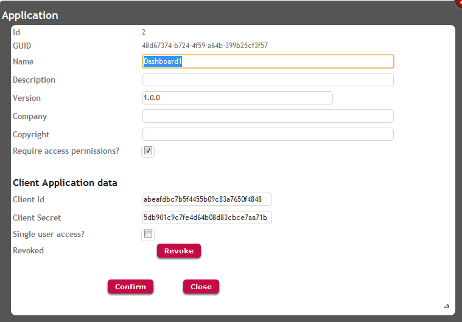

It's a GAM Application property that allows specifying if this Application will check GAM Permissions or not.
The way to configure this property is by executing the GAM Backend and going through the WW Applications item. See the figure below:

In new KBs, when Repository Initialization is done, the Require Access Permissions Application Property is set to TRUE by default.
This means that by default the Application will check permissions in run time.
In other words, if you want your application to check permissions automatically (Integrated Security Level Property = Authorization), or you want to check permissions in runtime by code (as in this example Permissions created by the user), the Require Access Permissions Application Property needs to be set to TRUE.
GAM - Authorization Scenarios
GAM - Permissions Created by the User (X Evolution 3)
GAM - Automatic Permissions generated by GeneXus